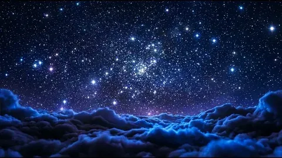
Эта работа посвящена тому, как учёные ищут жизнь за пределами Земли. Вопрос о том, одиноки ли мы во Вселенной, перешёл из философии в строгую науку.
Поиск основан на двух допущениях: земная жизнь не уникальна, а химические условия для неё распространены в космосе. Учёные ищут планеты в зоне обитаемости — там, где может быть жидкая вода. Жидкая вода считается главным условием жизни.
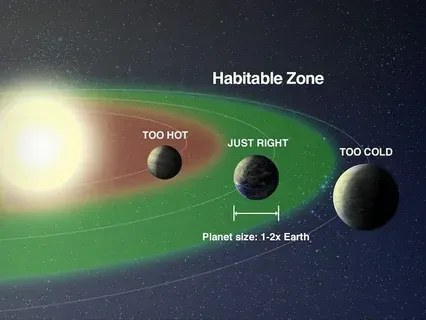
На основе данных о более чем 6000 экзопланет составили список из 45 самых перспективных. Вот несколько особенно интересных:
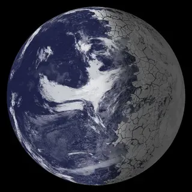
TRAPPIST-1e — похожа на Землю по получаемой энергии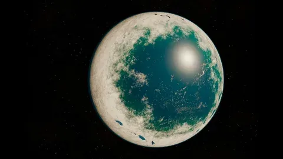
LHS 1140 b — возможно, есть океан и азотная атмосфера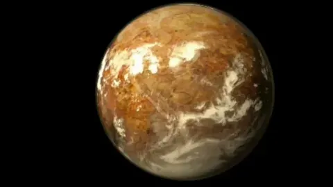
Proxima Centauri b — ближайшая к нам, всего 4 световых года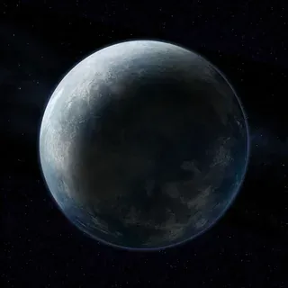
GJ 1002b — самая похожая на Землю по размеруМногие «молекулы жизни» образуются и без жизни. Аминокислоты находили в метеоритах. Найти одну молекулу — не значит найти жизнь. Это называют проблемой ложноположительных сигналов.
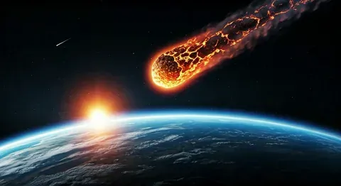
В 2026 году предложили метод по статистике молекул. Жизнь производит молекулы не случайно, а по порядку. В живом образце аминокислоты более разнообразны и равномерны, чем в неживом. Метод проверили на 100+ образцах — от микробов до скорлупы яиц динозавров.
Скорее всего, жизнь — это микробы, а не «зелёные человечки». В Солнечной системе есть три главных места:
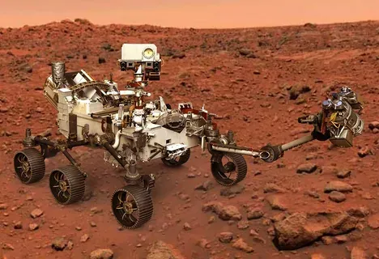
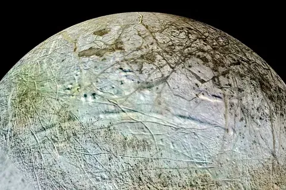
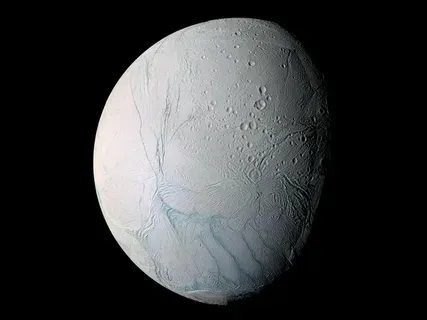
Некоторые земные бактерии выживают в марсианских условиях. В эксперименте споры чёрной плесени выжили в стратосфере. Поэтому космические аппараты стерилизуют — чтобы не спутать земную жизнь с инопланетной.
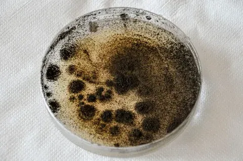
Самый известный — сигнал «Wow!» 1977 года. Он длился 72 секунды. Современные исследования считают, что причина естественная — облака водорода, подсвеченные магнетаром. Сигнал больше не повторялся.
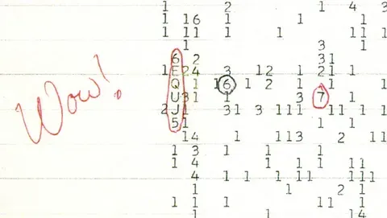
Поиск внеземной жизни — это детективная работа. Учёные ищут планеты в зоне обитаемости, проверяют молекулы, изучают подлёдные океаны и проверяют каждый сигнал. Главное — не спешить с выводами.
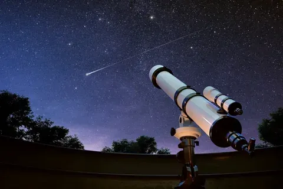
Этот раздел — моя фантазия. Я представил, как может выглядеть контакт с другой цивилизацией. Картинка, видео и звук ниже созданы нейросетью специально для этого проекта.
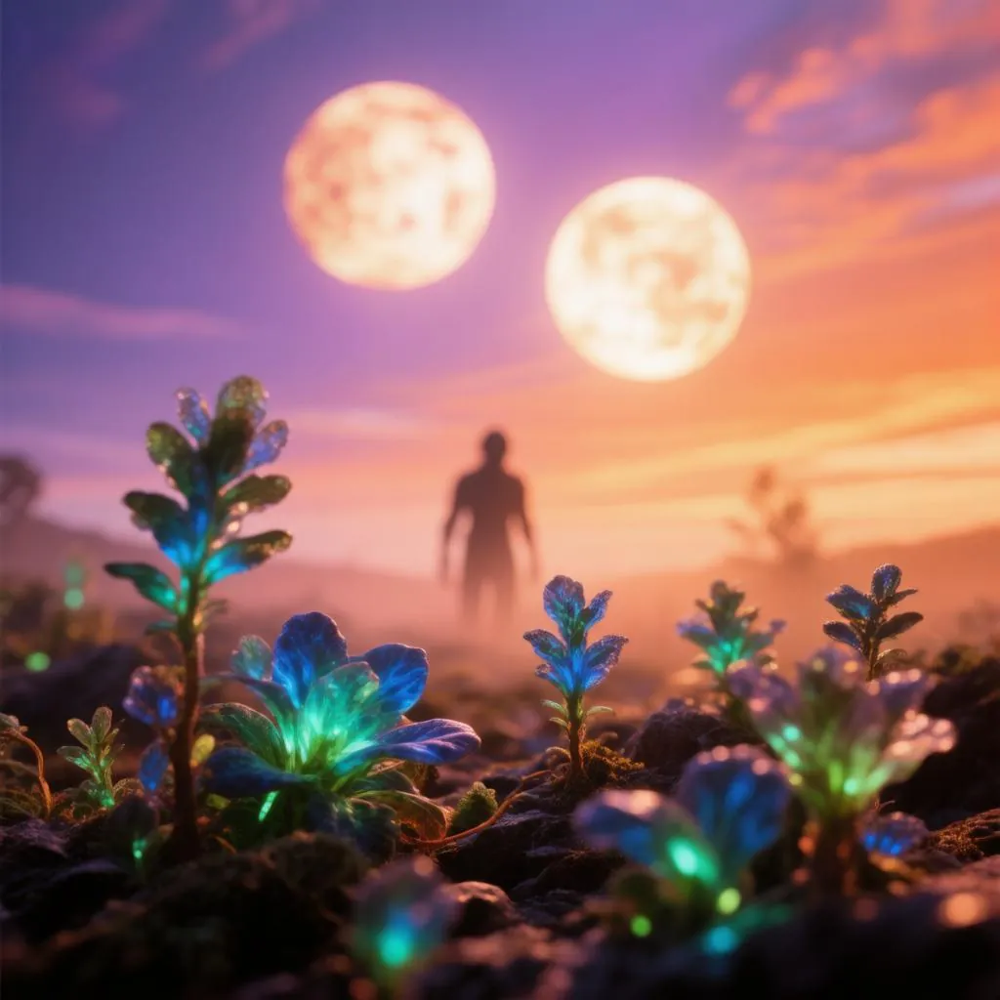
Я представил планету, где небо другого цвета, а на горизонте — силуэты неизвестных существ. Это не научный факт, а моё воображение.
Это короткое видео я сгенерировал с помощью нейросети. В нём показано, как может выглядеть первая встреча человека и внеземного существа.
Важно: всё в этом разделе — фантазия. Настоящих доказательств внеземной жизни у учёных пока нет.